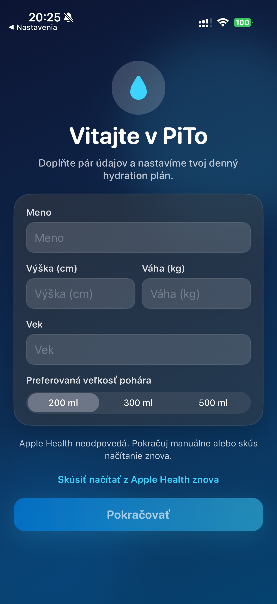
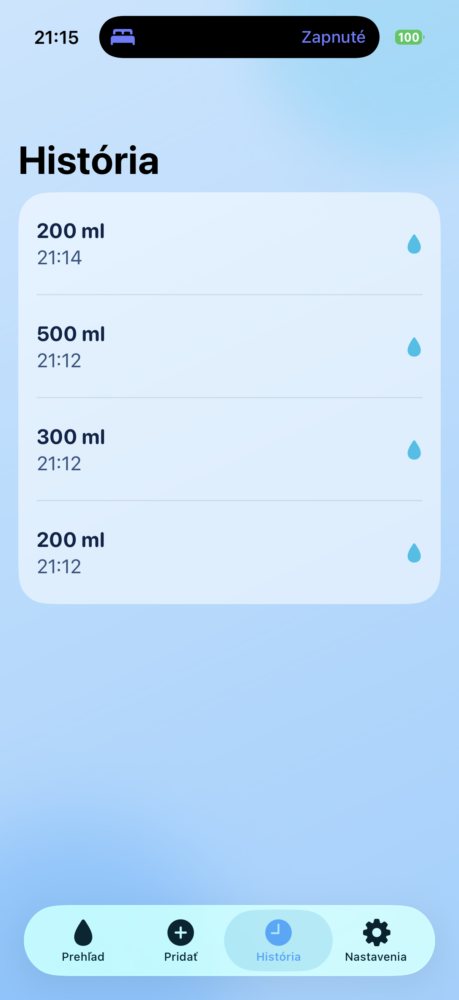

PiTo je appka, ktorá robí pitný režim prekvapivo jednoduchý a príjemný.
Namiesto chaosu máš čistý prehľad, rýchle pridávanie jedným klikom a dizajn, ktorý ťa motivuje otvoriť appku každý deň. PiTo je postavené tak, aby bolo rýchle, vizuálne konzistentné a praktické v reálnom živote.
Top UX + okamžitý prehľad + Apple Health onboardingRýchle používaniePridanie nápoja trvá sekundu. Žiadne zbytočné kroky.
Motivačný dizajnModerné UI, ktoré je čitateľné v tmavom aj svetlom režime.
Praktická históriaZáznamy vieš spätne upraviť, takže údaje ostávajú presné.




Táto stránka obsahuje iba marketingový obsah a screenshoty. Zdrojový kód aplikácie môže zostať privátny.